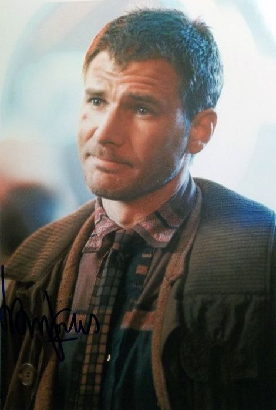
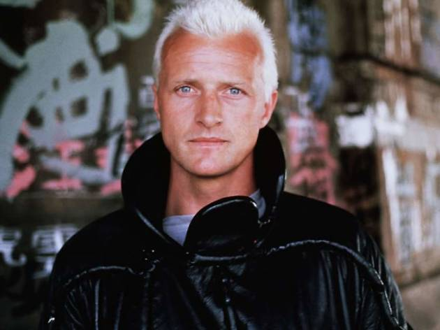
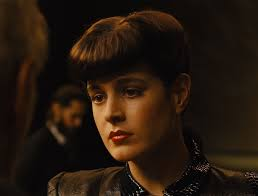
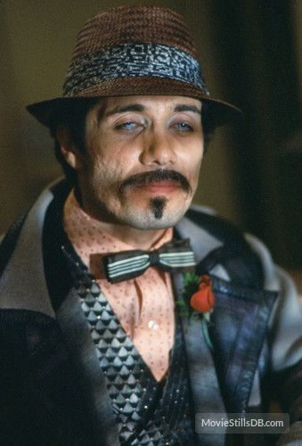
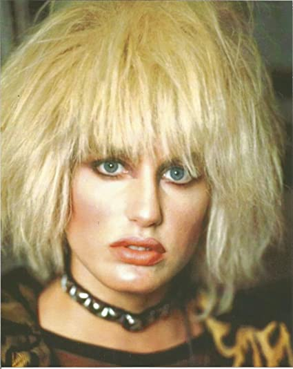

Blade Runner
Protagonistas
En esta pestaña, podéis encontrar a los protagonistas de la película de 1982, junto a su nombre y una fotografia!
 Harrison Ford (Chicago, Illinois, 13 de julio de 1942) es un actor estadounidense de cine y televisión. Debe su notoriedad a su colaboración con el guionista, productor y director George Lucas, que fue el primero en darle la posibilidad de ser actor. Sus papeles de Han Solo en la saga de Star Wars y de Indiana Jones lo elevaron al nivel de estrella internacional. Aunque un fracaso inicial en taquilla, la película de Ridley Scott Blade Runner, donde desempeña el papel del cazador de replicantes Rick Deckard, terminó convirtiéndose en una película de culto de la ciencia ficción.
 Rutgeru Oelsen Hauer (Breukelen, Utrecht, 23 de enero de 1944-Utrecht, 19 de julio de 2019), más conocido como Rutger Hauer, fue un actor neerlandés que trabajó en Hollywood.2 Conocido principalmente por su actuación en la película de culto Blade Runner (1982), donde encarnó al replicante Roy Batty, apareció también en películas como Delicias Turcas (1973), Soldaat van Oranje (1977), Nighthawks (1981), The Osterman Weekend (1983), Ladyhawke (1985), Flesh and Blood (1985), The Hitcher (1986), Escape de Sobibor (1987), Confesiones de una mente peligrosa (2002), Sin City (2005), Batman Begins (2005) o Valerian y la ciudad de los mil planetas (2017).
 Sean Young (Louisville, Kentucky; 20 de noviembre de 1959) es una actriz estadounidense. Con dos peliculas de culto en la decada del 80' que la hacen una referente en el septimo arte hasta el dia de hoy. Rachel la replicante "casi" humana en Blade Runner y Chani en la aún al día de hoy controvertida Duna. Volvería a tocar el éxito de manera muy efimera con Locos del Aire junto a Nicolas Cage, Un beso antes de morir junto a Matt Dillon en donde obtuvo mucho éxito de publico y buena quimica con su compañero de elenco, pero doble premio a peor actriz y Ace Ventura junto a Jim Carrey
 Edward James Olmos (24 de febrero de 1947) es un actor y director estadounidense. Fue notablemente conocido a mediados y finales de los años 1980 por interpretar al teniente Castillo, en la serie de televisión estadounidense Miami Vice; y más recientemente por interpretar el papel de William Adama, comandante de la flota, en la versión reimaginada de la serie de televisión Battlestar Galactica. También ha interpretado al detective Gaff en Blade Runner (1982) y Blade Runner 2049 (2017).Nació en Los Ángeles, California, hijo de un inmigrante mexicano baptista y madre mexicano-estadounidense católica. Olmos se considera chicano y dice ser bisnieto de Enrique Flores Magón.
 Daryl Christine Hannah (Chicago, Illinois; 3 de diciembre de 1960) es una actriz estadounidense. Hizo su debut en la pantalla en 1978. Saltó a la fama tras aparecer en films como Blade Runner (1982), donde da vida a la replicante Pris, o la comedia Splash (1984), en la que interpreta a la sirena Madison. Ha sido estrella en numerosas producciones de Hollywood durante los años 1980. En el año 2003 destacó en su papel de la asesina Elle Driver en Kill Bill, después de estar apartada de roles principales durante varios años. Sus padres se divorciaron poco después de su nacimiento. Hannah, es vegetariana desde los 11 años. Tiene dos hermanos Don y Page Hannah, actualmente actores.